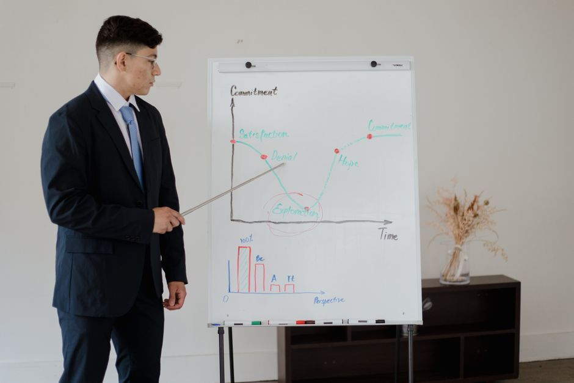

Ensemble Methods Explained Without the Jargon
Bagging, boosting, and stacking all combine models to reduce error, but they do it for different reasons. Here is the intuition behind each, with a worked example.
Why bother combining models at all
A single model, however well tuned, carries the scars of the particular data it saw and the particular assumptions baked into its algorithm. Ensembles exist because different models, or different versions of the same model, tend to make different mistakes. If those mistakes are not perfectly correlated, combining the models can cancel some of the noise out. That is the entire idea. Everything else is detail about how you generate the different models and how you combine them.
It helps to separate two distinct problems an ensemble can solve. The first is variance: a model that is unstable, changing a lot if you retrain it on a slightly different sample. The second is bias: a model that is systematically wrong in a consistent direction because it is too simple to capture the pattern. Bagging mainly attacks variance. Boosting mainly attacks bias. Stacking is a different kind of trick entirely: it learns how to combine already-decent models rather than trying to fix a weakness in any one of them.
Bagging: averaging away instability
Bagging stands for bootstrap aggregating. You take your training set, draw many random samples from it with replacement (so some rows appear twice, others not at all), train a separate model on each sample, and average the predictions. Random forests are the classic example: each tree is grown on a bootstrap sample, and each split also considers only a random subset of features, which decorrelates the trees further.
Here is the intuition with numbers. Suppose a single decision tree, if you retrained it on a fresh sample from the same population, would swing around enough that its predictions have a variance of, say, 4 units on some error scale, and imagine the trees are only mildly correlated with each other. Averaging many such trees shrinks that variance roughly in proportion to how correlated they are: if they were completely independent, averaging a hundred of them could cut the variance dramatically; because real trees share the same training rows and similar splits, the reduction is smaller but still substantial. This is why a random forest of a few hundred trees is usually far steadier than any one of its trees, without needing to be individually more accurate.
What bagging will not fix is a model that is wrong in the same direction every time. If a shallow tree systematically underestimates a particular region of the input space, averaging a hundred shallow trees just gives you a hundred confident versions of the same underestimate. Bagging reduces wobble, not systematic error, and that limitation is exactly what motivates boosting.

Boosting: correcting mistakes on purpose
Boosting builds models sequentially rather than in parallel, and each new model is trained specifically to fix the errors of the ones before it. In gradient boosting, after the first weak model makes its predictions, you compute the residual errors, then train the next model to predict those residuals, add a scaled-down version of that prediction to the running total, and repeat. Each step nudges the overall prediction a bit closer to the truth, focusing effort on the cases that are currently wrong.
Picture a simple regression problem where the true relationship has a mild curve that a single shallow tree cannot capture; the first tree might leave an average residual error of 10 units. A second tree trained on those residuals might shrink the remaining error to 6 units, a third to 4, and so on, with diminishing returns as the easy structure gets absorbed and only noise remains. The learning rate, often a small number like 0.05 to 0.1, controls how much of each new tree's prediction gets added; a smaller learning rate needs more trees but usually generalises better, because it stops any single tree from overcorrecting based on a handful of noisy points.
This sequential, error-focused process is powerful, which is exactly why boosting is also easier to overfit than bagging. If you let it run for too many rounds, or set the learning rate too high, later trees start fitting noise in the residuals rather than real signal. This is where leakage-aware evaluation earns its keep: you need a validation split that genuinely was not touched during training, so early stopping decisions are based on honest, out-of-sample performance rather than on numbers that have quietly absorbed information from the data the model was fit on.
Stacking: learning how to combine, not just what to combine
Stacking takes a set of already-trained base models, perhaps a random forest, a gradient boosted tree, and a linear model, and trains a further model, called a meta-learner, to combine their predictions. The base models produce their predictions on data they did not train on, typically via cross-validation folds, and the meta-learner is fit on those out-of-fold predictions as its input features, learning something like how much to trust each base model and under what conditions.
Suppose the random forest tends to do well on typical, well-represented cases but wobbles on rare edge cases, while the linear model is mediocre overall but stable on exactly those edge cases. A simple average of the two would drag the strong performer down. A meta-learner, even something as simple as a regularised linear regression over the base predictions, can learn to lean on the forest most of the time and shift weight toward the linear model when the inputs look unusual, producing a combined prediction that beats either base model alone.
The main trap in stacking is leakage through the meta-features. If you let a base model see the same rows it produced predictions for when training the meta-learner, the base model's predictions on its own training data will look artificially confident, and the meta-learner will learn to over-trust it. That is precisely why the out-of-fold prediction scheme matters: every prediction fed to the meta-learner must come from a version of the base model that never saw that row.
The practical takeaway is to choose the ensemble method by naming the actual problem. If your model is accurate on average but unstable across resamples, bagging is the natural fix. If it is stable but consistently off in predictable ways, boosting addresses that directly. If you already have several reasonable models that seem to fail in different places, stacking can combine their strengths, provided you are careful about how the training data for the meta-learner is generated. In every case, the gains are real only if your validation setup would catch the failure mode the ensemble is meant to fix.